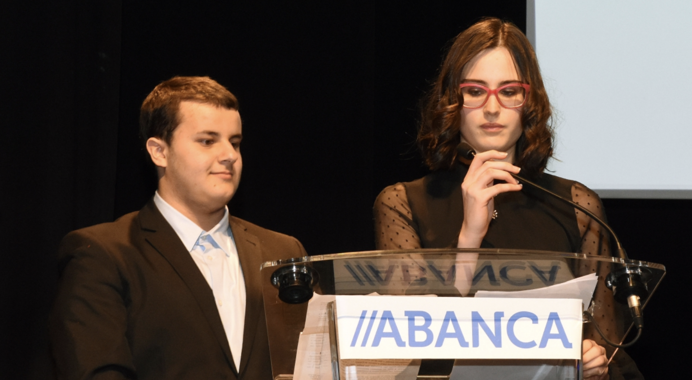

On this page, you will find some stuff that I consider curious about myself.
In 2020 I was awarded a Diploma for my results in the VII International Students' Olympiad in Cryptography, NSUCRYPTO. I'm very proud as it was a tournament with participants from all over the World. Also, I found this competition very interesting as it has problems with a wide range of math knowledge. If you want to know more or try to solve some problems, this is the link: NSUCRYTO.Here, you can find a Youtube video, in the Galician language, where I explain how natural numbers can be built from the empty set:
Here, you can find a picture of myself doing the graduation speech of my B.Sc. with the other two students. Despite Covid measures, it was a good day, as I also played the drums in a band formed by my promotion students.

This picture is from 2017 when I was part of the jury for the San Clemente's literature award. This award was given that year to Xabier Quiroga, Sara Mesa and Pierre Lemaitre. I'd like to highlight that during its history it was given, among others, to José Saramago, Colm Tóibin, or Jöel Dicker.
